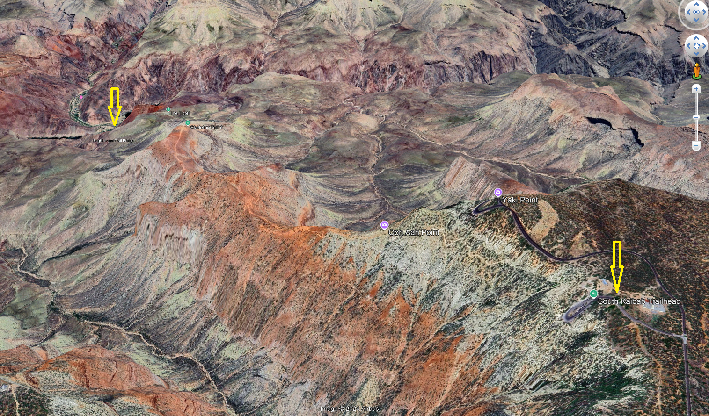
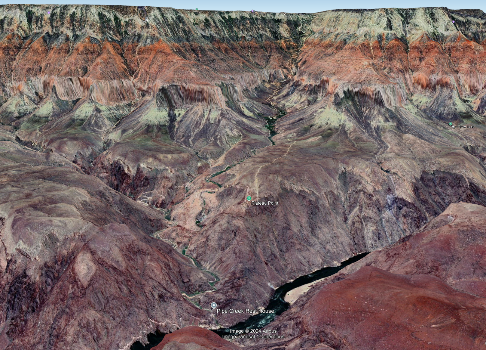
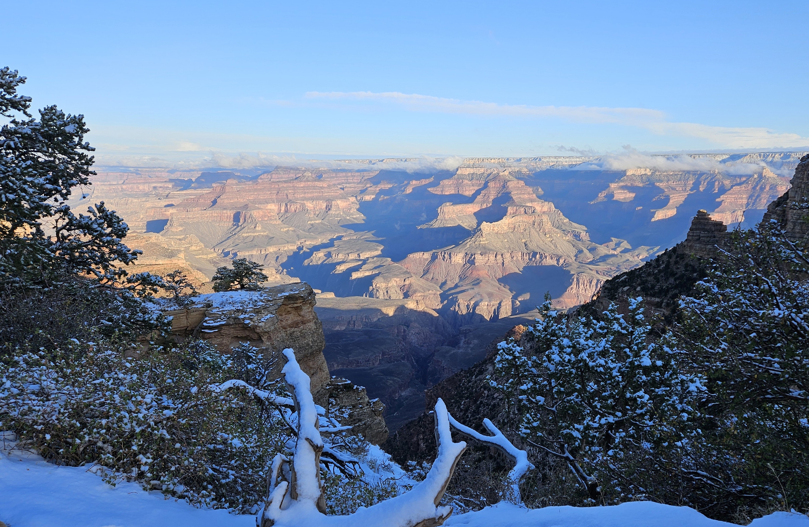
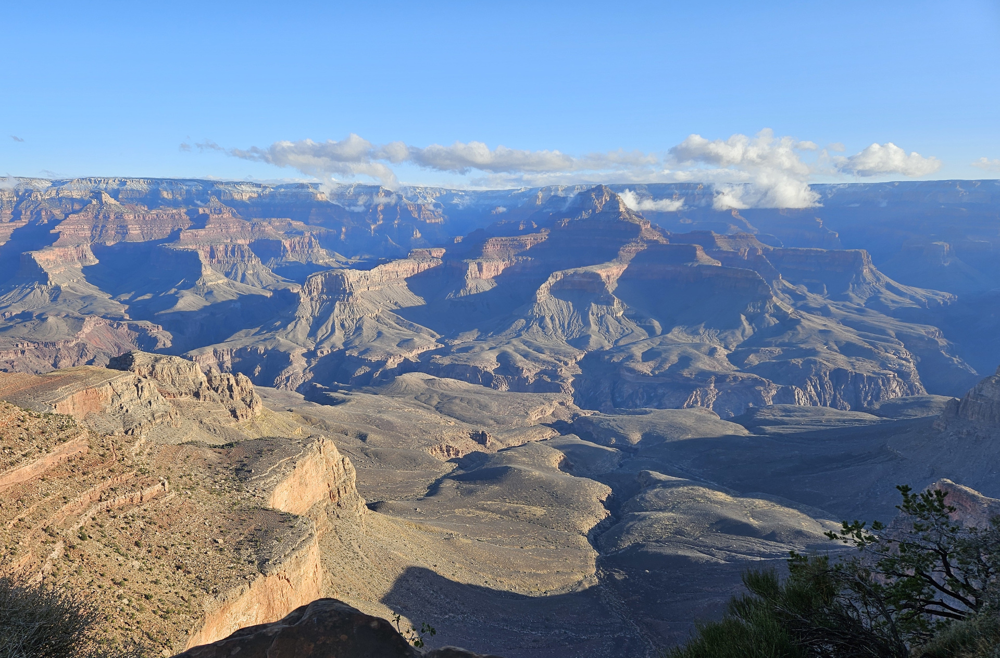
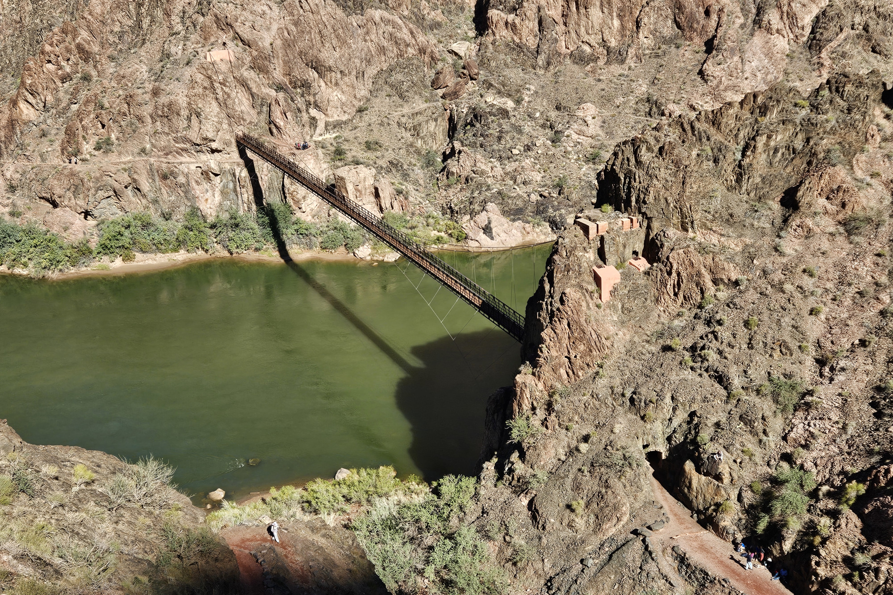

“事情在干完之前总是显得不可能”- 纳尔逊·曼德拉。
(“It always seems impossible until it’s done” – Nelson Mandela)
曼德拉的至理名言在我圆梦徒步大峡谷的过程中显得无比正确。二十一年前，当我第一次看到大峡谷时， 就被它磅礴的气势所震撼，从而产生了想要徒步进入峡谷中心的愿望。可是，由于种种原因这个愿望昨天才得以实现。
徒步进入大峡谷最大的障碍是潜在的风险。大峡谷国家公园一日徒步的网页上充满了红色的警示语言： “危险！”、“进出大峡谷没有轻松途径”等等。大峡谷的确是危险的，几乎每年都有人葬身谷中， 每年有超过250人需要求援。夏季（六月至九月），当峡谷顶部的温度还能让人承受的时候， 峡谷底部气温就高达摄氏四十多甚至五十度，那里只有光秃的岩石，几乎没有任何树荫。人一旦因高温脱水而中暑， 必定吉少凶多。冬季，主要步道因冰雪而关闭。一年内适合徒步的日子非常有限。
南凯巴布小道 - 从南向北俯瞰
从大峡谷南缘进入峡谷核心区域有两条步道，东边的南凯巴布小道(South Kaibab Trail)和西边的光明天使小道(Bright Angel Tral)。 前者长7英里(11公里多)，主要在一条山脊上；后者长10英里(16公里)，全部在一条山谷内，二者在科罗拉多河交汇。 虽然两条步道都维护得不错，但路长坡陡，行走不易。更艰难的是，入峡谷和登山刚好相反，当一天开始， 谷顶气温舒适、人的体力充沛，徒步者能轻松下行。进入峡谷后，气温骤升，体力消耗，如果不能及时补充水分， 就容易出现中暑险情。而回程时，徒步者要冒着酷热向上攀登，而且越往上走坡度越陡，这时体力和水分消耗很大， 如果出现任何意外，后果都不堪设想。所幸的是，光明天使小道每隔1.5英里(2.4公里)就有一个休息点，有厕所和饮水供应， 减轻了徒步者的脱水危险。但是如果徒步者夏季偏离步道太远，那将是危险的。南凯巴布小道除了两头，中间是不供水的。
光明天使小道 - 从北向南看
今年年初我就和朋友商定去大峡谷徒步，但今年直到十月中旬，大峡谷中心白天最高气温仍然高达摄氏三十七八度。 根据一周的天气预报，十月十八、十九两日有一个大降温和可能降雨的天气系统。如果不下雨将是绝佳时期， 于是我们锁定了这两天。果然十八日天不亮，天气系统如期而至，雨雪和冰雹交加几乎下了一整天。根据晚间天气预报， 次日大峡谷的天气为多云，傍晚有百分之十八的降水可能性。于是，十九日天不亮我们就从Flagstaff出发，前往大峡谷。 亏凸的月亮高高挂在天上，有少量浮云飘过，除了180国道遇上一小段飘雪，一路上天气都显示出良好的征兆。
南凯巴布小道于大峡谷南缘的的起点
我们七点钟到达大峡谷国家公园南缘的游客中心，这时天已经大亮。7:20我们乘公园的橙色公交车前往南凯巴布小道的起点。 经过头一天的雨雪洗礼，天空特别的蓝，地面零星地覆盖着一层薄薄的白雪，太阳透过树梢斜射过来，给人淡淡的暖意。 7:33我们正式踏上了深入大峡谷的小道，开始沿着一堵峭壁的西侧下行，虽然这时气温在摄氏0度上下，也见不到太阳， 但沙石路面上没有冰，也没有寒意。小道宽能轻松容纳二人并行，路面是就地取材铺就，在坡度较陡的路段， 有用本地红色砂岩或柏树干砌成的宽阔台阶。大约二十分钟后我们走出悬崖侧壁，来到了山脊上，太阳照在身上，暖洋洋的。 阳光斜射在峡谷对面（北侧）层层叠叠的悬崖和斜坡上，投下长长的阴影。红与黑、光与影的交错，加上远方山顶的白雪， 和漂浮在高原面上的白云，构成一幅壮丽多姿、气势磅礴的画卷。我们沉浸在大自然的画卷里，沿着山脊，朝着峡谷深处，一路高歌。
从南凯巴不小道向北看
原来打算四小时到达科罗拉多河畔的计划，竟然提前一小时就完成了。10:30，我们来的了横跨科罗拉多河上的一座悬索铁桥， 名叫黑桥(Black Bridge)。 黑桥的南端是一座在红色花岗岩中开凿出的小隧道，穿过隧道就走在了桥上。桥长100米，宽度能容纳二人并行。 过了铁桥，适逢一运输骡队正准备登桥南去，在骡官的吆喝声中，骡子顺从地列队依次上桥，整齐通过。说起这座铁桥， 可谓是我在大峡谷的一大“发现”。我们知道大峡谷是科罗拉多河的杰作，但二十一年前我初到大峡谷， 第一眼并没有看到想象中的大河。后经过仔细搜索，终于在很远处高低错落的岩石缝隙中，发现如树叶大小的一片三角形水面， 我断定它就是科罗拉多河。后来使用长焦照相机，竟然拍摄到河上有一座桥，因此感到异常兴奋。 多少年来，这座桥一直可望不可及。多年前的“发现”，今日与之零距离接触，激动之情堪比阿波罗登月！
科罗拉多河上峥峥岩石之间的黑桥
河流两岸暗红色的花岗岩峭壁相对峙，河水湍急，布满漩涡。过了河往西便是一片河滩。滩上大小石块遍布， 生长着一些耐高温灌木和的零星的牧豆树。激流撞击着岸边古老的花岗岩，冲刷出嶙峋突兀的礁石，有的屹立江中， 成为中流砥柱。在一处水流回旋的河滩边，有一片质地均匀的白色沙滩，沙滩边河水清且涟漪，是漂流者登岸歇息的码头。 因为季节已过，不见了漂流筏，沙滩显得格外的宁静。在科学上，这片河滩是光明天使小溪 (Bright Angel Creek) 的三角洲。光明天使小溪发源于大峡谷北缘，是大峡谷系统中最长的一条支谷， 溪水终年不断。北凯巴布小道(North Kaibab Trail)便是沿着光明天使小溪溯源而上、直抵北缘的一条步道， 全长约14.2英里(23公里)，是南北横穿大峡谷的唯一通道。
10:55我们在河滩上一棵小牧豆树下找到一张野餐桌，吃过午餐、稍事休息后，11:30便踏上光明天使小道。 中午的阳光依然和煦，河滩上气温约为摄氏二十度，天气非常宜人。从一座小桥穿过光明天使小溪， 继续向西步行两百来米就来到科罗拉多河上的另一座桥，叫光明天使小道桥(Bright Angel Trail Bridge)。它也是一座悬索铁桥，比黑桥稍窄，仅容一人从容通行。桥上二人相遇，必须侧身互让。 这座桥的主要作用是帮助一条从大峡谷北缘至南缘的输水管过河。这条水管过河后沿着光明天使小道南行， 直达南缘的大峡谷村(Grand Canyon Village)，落差1400米。 它每天向大峡谷村输送15万加仑(近600方)水，也为光明天使小道沿途四个休息点提供饮水。
光明天使小道铁桥
向南过河后，沿着南岸峭壁上开凿出来的小道西行1.6英里(2.5公里)，便到了花园溪 (Garden Creek)的谷口，溪口有一个休息点。光明天使小道便是沿着花园溪一路溯源而上， 直达南缘的大峡谷村。下游段的花园溪，嵌入在大峡谷底部一个高出河床约四百米的花岗岩基岩台地中， 两侧悬崖峭立，溪谷不算宽，给人温暖平和之感。花园溪潺潺流淌在谷底的绿草和灌木丛中，小道也平缓易行， 虽然下午气温渐高，徒步在小溪边依然心旷神怡。沿着溪流向南走大约一英里(1.6公里)就开始上坡， 小道转为沿着悬崖边之字形上升，经过多重往复，又回到花园溪旁边，小道也回归平缓， 直到哈瓦苏派花园(Havasupai Garden)。
光明天使小道山谷入口的一座休息站
哈瓦苏派花园，从前叫印第安花园(Indian Garden)， 直到2022年底应哈瓦苏派土著民部落的要求改名。流淌在谷底的花园溪，在这里滋养出一片绿荫。 这里生长着一种我叫不出名字大型阔叶乔木，树干粗壮，枝繁叶茂，为南来北往的徒步者创造了一个荫凉的休息场所。 十年前我初探大峡谷、前往平台小道(Plateau Trail)时曾在这里休息， 那时路边上有两棵大树。当年大树下徒步者的欢声笑语隐约在耳， 但那两棵大树如今已不复存在，只留下两个直径一米多的巨大树桩。我们在下午1:56到达哈瓦苏派花园， 又吃一些干粮和水果补充能量，2:30继续前行。
敢问路在何方
哈瓦苏派花园距离大峡谷南缘的小道起点大约是五英里，落差九百多米。往南，经过约一英里的缓坡， 小道就又开始变陡，每当遇到悬崖，小道就变得像楼梯一样，反复地左转右折。当你面对万丈悬崖、望崖兴叹时， 不禁自问路在何方。经过长途跋涉，很多徒步者已是筋疲力尽，他们喘着粗气，每到一处转折，就要在路旁坐下休息。 山谷里没有壮阔的风景，向前看，只有目标高高在上，看似遥不可及。转过头，走过的路层层叠叠，越积越多， 但哈瓦苏派花园却好像总在不远处。又经过两个供水点，离悬崖顶越来越近，这时天空飘起了细雨，北缘开始被乌云笼罩。 不到十分钟，乌云越过峡谷中心快速向南推进，雨渐渐变大，这时我们撑开携带的折叠伞，不敢怠慢，一鼓作气， 冲上悬崖顶，胜利到达光明天使小道的起点，这时正好是下午五点钟。
历时9.5小时，步行27公里，上下1400米，深入大峡谷，沐足科罗拉多河，我们做到了！
2024年10月20日于北亚利桑那
后记
有些事情往往看起来比做起来难。出发前，我们对徒步入出大峡谷做了大量的研究， 考虑了各种可能出现的意外情况，制定了详细计划，结果原计划12小时完成的任务提前了2.5小时就完成了。我这不是鼓励冒然进入大峡谷， 大峡谷确实是凶险的，特别是夏季，应该禁止进入。我们这次顺利徒步进出大峡谷，可谓占尽天时地利人和。 首先，我们选择的日子真是大吉大利，气温骤降去除了大峡谷最大的风险 – 炎热。而十八日又把雨下完，让次日风和日丽。 十九日是今年倒数第二个能走通这两条小道的日子，因为从二十一日起，哈瓦苏派花园至光明天使桥的路段将关闭至明年五月。 其次，在体力上我们进行了长时间的充分准备，每周能跑三、四次十公里长跑。最后，我们对目标区域和路线进行了充分研究， 制定了详细行动计划，包括休息点，补水点，厕所位置，食物和水，照明设备，防雨设备等。有了这些有利条件和充分准备， 在登山时花甲老者基本不输年轻人。